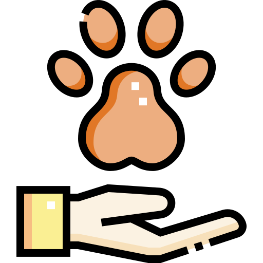

<mat-toolbar color = "primary">
    <span> Creación de cuenta - Selección</span>
    <span class="example-spacer"></span>
    <button mat-icon-button routerLink = "">
        <mat-icon>highlight_off</mat-icon>
    </button>
</mat-toolbar>
<h2 class= "titulo">Seleccione el tipo de cuenta a crear</h2>
<div class = "body">
    <div>
        <div class = "crear">
            
            <p></p>
                <button  class = "ancho button" mat-raised-button color="primary" routerLink = "/crear-cuenta/crear-adoptante">
                    Adoptante
                </button>
        </div>
    </div>
    <div>
        
        <p></p>
        <button  class = "ancho button" mat-raised-button color="warn" routerLink = "/crear-cuenta/crear-fundacion">Fundación</button>
</div>
